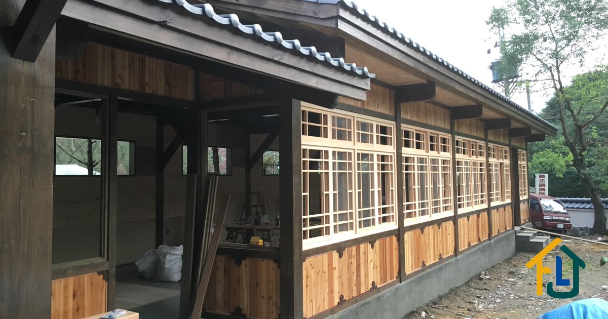

承接 AI 客服、流程自動化與資料系統。先從你目前的工作方式找出重複、容易出錯的步驟，再確認哪些值得做成系統。
免費諮詢 初步討論不收費，我會回覆可行範圍、預估費用與限制
正式營運中品牌官網 · AI 諮詢 · SEO · 持續維運
起價讓你先判斷預算是否合適，實際費用依功能與串接範圍估算。每項服務頁都有內容、計價方式與可操作的成品。
依照你的產品資料回答常見問題，並沿著對話補問報價所需資訊。遇到無法確認的內容會轉給真人，可串接 LINE 官方帳號、Facebook Messenger、Telegram 與網站。
看細節與 Demo →表單送出後自動通知、寫入試算表；訂單、庫存或客戶資料在不同系統間同步；固定時間抓資料、整理並寄出報表。流程失敗時會自動重試並通知你。
看細節與案例 →依填答者身分與前面的答案顯示不同題目，送出後即可查詢、篩選與匯出。適合問卷邏輯複雜，或資料收回後還要花時間整理的工作。
看細節與 Demo →從需求文字或文件中辨識品項與數量，再依你的目錄和計價規則產生報價。找不到對應品項時標記待確認，不讓 AI 自行補價格。
看細節與案例 →先整理現行流程、使用的工具與例外狀況，再提出可自動化的範圍、預估節省時間、做法與費用。若後續委託開發，診斷費可全額折抵。
完成後提供書面評估文件驗收上線後提供 30 天保固，處理已約定功能的異常。保固期滿後可按次處理，或選擇基本維護；需要主動監控、固定調整時數與優先處理，可選 NT$5,000 / 月起的代管方案。不綁約。
先看作品總覽，再往下查看負責範圍、解法與目前狀態。
品牌官網、內容、SEO、AI 諮詢與持續維運
查看案例 ↓ 02 / 04文字需求抽取、目錄比對與確定性計價
查看案例 ↓ 03 / 04條件題目、資料蒐集、管理與匯出
查看案例 ↓ 04 / 04獨立開發、正式上線並持續營運的內容平台
查看案例 ↓由業主授權，獨立負責網站規劃、內容整理、建置上線、搜尋引擎設定、AI 諮詢系統與後續維運。
官網集中呈現服務與工程案例，網站及 LINE 諮詢助理則先回答常見問題、辨識客人傳送的照片，並補問尺寸與施工地點；無法確認時連同對話內容轉給真人。
正式網站與 AI 諮詢流程持續營運，案例內容、網站功能與客服流程皆由我維護。
技師以文字描述施工需求，行政人員再逐項查閱商品目錄、確認價格並計算稅額，最後整理成報價單。
語言模型先擷取品項與數量，程式再比對供應商目錄並依規則計算。找不到的項目標為「待確認」，最後輸出包含利潤、工時、車馬費與稅額的報價內容。
報價中的單價與計算結果都有資料來源，不由模型自行產生。系統以自架 n8n 提供 API，供前端網頁呼叫。
受評公司以 Excel 填寫問卷，但同一份表單包含所有部門的題目，填答者要自行判斷相關項目；收回後還要重新整理才能分析。
依填答者職位與前面的答案顯示題目，表格即時計算，送出前集中檢查缺漏。管理端可新增、修改、預覽與發布題目。
資料依公司、年度、題號與分類保存，可篩選、匯出或串接報表工具。填答者以專屬連結進入，不需另外建立帳號。
獨立完成並持續維運的內容平台，包含帳號、媒體處理、內容審核、搜尋與社群功能；目前有兩百多支 API、五百多個程式檔案。
涵蓋需求設計、開發、部署、監控與線上問題處理，也因此能在接案時一併考慮系統上線後的維護方式。
以下是我在規劃與交付時採用的原則。
客服或自動化流程通常能在幾週內提供第一個可操作版本。開發時間除了主流程，也會用來處理斷線、格式錯誤與資料對不上等例外狀況。
AI 用來理解文字與分類，金額、庫存和稅額則依資料與程式規則計算。無法比對的項目會標記出來，由人確認。
不必先整理成功能清單。先說明目前怎麼做、哪裡最花時間，我再協助拆出適合自動化與應保留人工判斷的部分。可用文字、電話或視訊討論。
主機、網域與第三方服務帳號以你的名義申請，我協助設定。交付文件會記錄系統架構、設定位置與問題排查方式，方便日後自行維護或轉交其他人。
AI 很適合協助製作小工具或原型，我自己開發時也會使用。差別主要在需求釐清、例外處理、部署、監控與後續維護。
例如 LINE 客服除了回答內容，還要決定轉接方式、對話狀態、紀錄保存、權限與用量上限；Webhook 逾時重送也可能造成重複回覆。這些都需要在上線前設計與測試。
如果工具只供自己使用，自己用 AI 製作通常很合適；若會直接服務客戶或影響營運，就要把維護責任與故障處理一併納入。
完整說明，包含什麼情況你真的該自己做 →說明目前的做法與最花時間的環節，我會進一步確認流程、資料與例外狀況，再回覆可行範圍、預估費用與時程。可用文字、電話或視訊討論。
若範圍仍不明確，可先做流程診斷（NT$5,000）；規模較大的案子則先用實際資料做可行性確認。兩者費用都可折抵後續開發款。
將功能、交付內容與驗收方式寫成文件，雙方確認後再開始開發；新增或變更的需求會另外估算。
先提供可操作的核心版本，再依確認過的範圍逐步加入功能，讓問題能在開發期間提早發現。
採訂金加分階段付款；每一階段依事先確認的內容驗收後，再進入下一階段。
驗收後有 30 天保固。保固期滿可按次處理、另選維護方案，或由你及其他人接手。